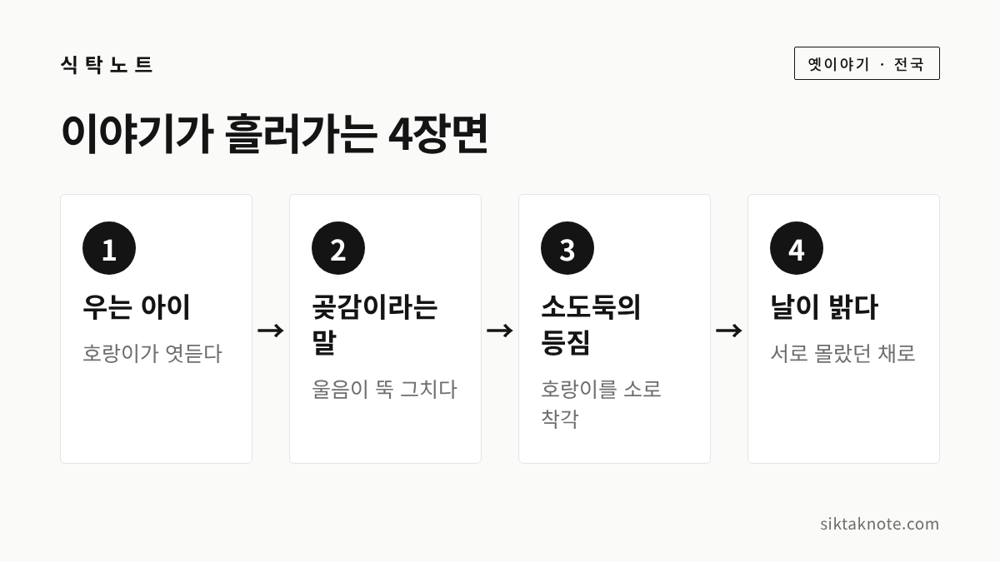
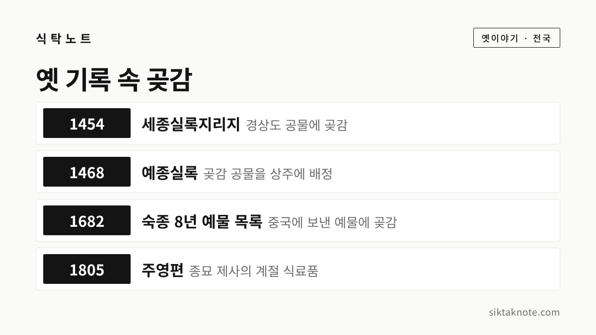

호랑이와 곶감 이야기 — 4장면으로 읽는 우리 옛이야기

3줄 요약
- 우는 아이가 곶감이라는 말에 울음을 그치자 호랑이가 곶감을 자기보다 무서운 짐승으로 믿고 달아난다는 이야기입니다.
- 소도둑이 호랑이를 소로 착각해 등에 올라타고, 호랑이는 등 위의 도둑을 곶감으로 여겨 달리는 장면이 웃음의 중심이에요.
- 곶감은 조선 시대 기록에도 나오는 음식이고, 이야기에 왜 곶감이 나오는지는 밝혀진 자료를 찾지 못했습니다.
누구나 아는 옛이야기
우는 아이를 달래던 어머니가 "곶감 줄게" 하자 아이가 뚝 그쳤고, 그 말을 밖에서 들은 호랑이가 줄행랑을 쳤다는 이야기는 한 번쯤 들어 보셨을 거예요. 오늘은 이 이야기를 네 장면으로 나누어 풀어 보겠습니다. 이렇게도 전해지는 줄거리와 옛 기록 속 곶감 이야기도 함께 담았어요.
한국민족문화대백과사전은 이 이야기를 동물이 주인공인 동물담으로 분류하고, 전국에 퍼져 있다고 설명합니다. 다른 이름으로 "범보다 무서운 곶감"이 올라 있고, 일제강점기에 교과서와 설화집에 실리면서 전래동화로 자리 잡았다고 해요. 줄거리는 이 자료들을 바탕으로 새로 풀어 썼습니다.


첫 번째 장면, 호랑이가 엿들은 울음소리
깊은 밤 호랑이 한 마리가 마을로 내려옵니다. 어느 집 앞에 이르렀는데 아기 울음소리가 새어 나오고 있어요. 어머니는 달래다 지쳐 "밖에 호랑이가 왔다"며 겁을 줍니다.
그런데 아이는 울음을 그치지 않아요. 대백과사전의 줄거리에 따르면 이 대목에서 호랑이는 호랑이가 왔다는 말에도 겁먹지 않는 아이라며 놀랍니다. 이야기는 여기서부터 슬슬 호랑이를 놀림감으로 만들기 시작해요.
호랑이는 옛이야기의 단골 주인공입니다. 『한국민속상징사전: 호랑이 편』을 인용한 언론 보도에 따르면, 설화 1,283건 가운데 약 40%에 호랑이가 나온다고 해요.

두 번째 장면, 곶감이라는 한마디
이제 어머니가 마지막 수를 씁니다. "자, 곶감이다" 하자 아이가 거짓말처럼 울음을 멈춥니다. 이 장면은 이야기마다 조금씩 달라서, 곶감이라는 말만 건네는 쪽도 있고 곶감을 손에 쥐여 주는 쪽도 있어요.
밖에서 듣던 호랑이는 깜짝 놀랍니다. 호랑이도 소용없던 아이가 곶감 한마디에 그쳤으니, 곶감은 자기보다 훨씬 무서운 짐승이 틀림없다고 믿어 버려요. 곶감이 무엇인지는 이야기 속에서 설명되지 않는다는 점이 열쇠입니다. 호랑이는 이름만 듣고 혼자 두려움을 키우는 셈이에요.

세 번째 장면, 소도둑과 호랑이
바로 그때 소도둑이 몰래 들어옵니다. 어둠 속에서 큼직한 짐승 하나가 서 있으니 소라고 생각하고 덥석 등에 올라타요.
호랑이는 등에 무언가 올라타자 깜짝 놀랍니다. 곶감이 나타났다고 생각한 것입니다. 호랑이는 죽을힘을 다해 내달리기 시작합니다. 소도둑은 소가 갑자기 뛰니 영문도 모른 채 매달려 갑니다.

네 번째 장면, 날이 밝고 나서
달리고 달리다 동이 트자 도둑은 그제야 자기가 탄 것이 소가 아니라 호랑이라는 걸 알아챕니다. 도둑은 가까스로 뛰어내리고, 호랑이는 곶감에게서 겨우 벗어났다고 여기며 계속 달아나요.
끝까지 서로를 잘못 알아본 채 헤어지는 것이 이 이야기의 웃음 포인트입니다. 어느 쪽도 상대의 정체를 모른 채 살아남았다는 점이 우스꽝스럽습니다.

이렇게도 전해집니다
옛이야기는 입에서 입으로 건너가며 길어지기 마련인데요. 대백과사전에는 뒷이야기가 붙은 판본이 소개되어 있습니다.
- 도둑이 숨는 판본: 도둑이 고목 속에 숨었다가 곰을 만나고, 꾀를 써서 곰을 이긴다는 이야기가 이어져요. 도둑이 구운 곰고기를 나눠 달라는 호랑이마저 속인다는 전개도 있습니다.
- 곰이 돕는 판본: 호랑이가 곰을 데려와 함께 도둑을 잡으려 하지만 실패하고, 곰은 잡히고 호랑이는 달아난다고 해요.
- 동양의 두 유형: 대백과사전은 동양의 이본을 호랑이가 도망치는 형과, 다른 동물이 도와주다 실패하는 형으로 나눕니다.
또 이렇게도 전해집니다. 미국 남가주대학교 민속 아카이브에는 한 구술자가 할머니에게 들었다는 판본이 올라 있는데, 호랑이가 어두운 곳간에 들어갔다가 도둑을 놀라게 하고, 도둑이 달아나자 호랑이도 곶감이 무서워 달아난다는 줄거리입니다. 한 사람의 구술이라 널리 퍼진 판본이라고 말할 수는 없어요.
중국과 일본에도 비슷한 이야기가 있다고 합니다. 발단이 다르다고 하는데요. 지붕에서 비가 새는 걱정을 하는 말을 듣고 호랑이가 자기보다 무서운 것이 있다고 생각하는 식이에요. 대백과사전은 인도의 『판차탄트라』(4세기경 완성)에도 비슷한 이야기가 있어 유형이 오래되었음을 알 수 있다고 적고 있습니다.
지역마다 어떻게 다른지는 자료로 확인하지 못했어요. 다만 한유진의 논문(『이화어문논집』 62집, 2024)에 따르면 2008~2018년에 나온 『증편 한국구비문학대계』에서 여러 지역에 걸쳐 「호랑이와 곶감」이 많은 비중으로 수집되었습니다.
옛날 곶감은 어떤 음식이었을까
곶감은 껍질을 벗겨 말린 감으로, 건시라고도 불렀습니다. 한국민족문화대백과사전은 오래 보관할 수 있어서 명절이나 제사에 쓰는 과일 가운데 하나였다고 설명해요. 감은 고려 시대 의학서 『향약구급방』에 나오는 것으로 보아 그때부터 재배된 것으로 보이지만, 말린 곶감은 이 시기 문헌에서 확인되지 않는다고 합니다.
조선 시대부터는 기록이 여럿 보입니다.

위 기록은 대백과사전의 곶감 항목과 상주곶감 항목에서 확인한 내용이에요. 상주곶감 항목은 "곶감"이라는 이름이 싸리나무 꼬챙이에 감을 꽂아 말리던 방식에서 왔을 것으로 보이며, 1970년대 후반까지는 가정의 간식이나 제사용으로 쓰이고 시장에서 싸리 꼬챙이에 10개씩 묶어 팔았다고 적고 있어요. 2019년에는 "상주 전통 곶감농업"이 국가 농업 유산 제15호로 지정되었습니다.
산청은 지리산 자락의 곶감 산지로 알려져 있는데요. 대백과사전에 따르면 『도문대작』이 지리산의 감을 곶감 재료로 좋다고 꼽았다고 해요. 산청 고종시는 2021년 보도에서 6년 연속 "대한민국 대표과일"로 소개되었습니다. 다만 산청 곶감이 언제부터 만들어졌는지는 확인하지 못했습니다.
대백과사전은 예전에 곶감을 손님 접대용으로, 또 노인과 어린이의 간식으로 많이 썼다고도 적습니다. 그렇다면 어머니가 우는 아이에게 곶감을 건네는 장면이 낯설지 않았겠다고 짐작해 볼 수는 있어요. 하지만 이야기에 왜 하필 곶감이 나오는지를 밝힌 자료는 찾지 못했으니, 어디까지나 짐작입니다.
곶감 먹고 보관하는 법, 짧게
곶감은 그대로 먹어도 좋고, 호두를 감싸 곶감쌈으로 만들기도 합니다. 대백과사전에는 잣을 박아 숙실과나 생실과에 곁들이고, 수정과의 주재료로도 쓴다고 나와요. 겉에 하얗게 앉은 가루는 당분이 올라온 것으로 설명되어 있습니다.
보관할 때는 습기를 조심하셔야 합니다. 대백과사전은 덜 말리면 곰팡이가 생기기 쉽다고 하고, 짚을 깐 상자에 담아 시원한 곳에 두면 표면에 흰 당분 가루가 생긴다고 소개해요. 흰 가루와 곰팡이는 다르니, 의심스러우면 드시지 않는 편이 좋겠습니다.
집에서 만들어 보고 싶으시면 곶감 만드는 법을, 말랑해진 홍시나 단감을 두는 방법은 감 보관법 3가지를 참고해 주세요.
이 이야기를 어떻게 읽을까
대백과사전은 이 설화가 어리석은 호랑이를 주인공으로 삼아, 강자의 어리석음과 약자의 재치를 해학적으로 보여 준다고 풀이합니다. 황윤정의 논문(『한국언어문학』 127집, 2024)은 조금 다르게 읽는데요. 곶감을 자연물을 사람이 가공한 음식, 호랑이를 사람을 위협하는 자연으로 보고, 자연과 문화의 대결로 해석합니다.
어느 쪽이든 호랑이보다 약하다고만 여기던 사람이 이야기 속에서는 슬쩍 앞서간다는 점이 닮았어요.
오늘 읽어 보신 네 장면은 우는 아이, 곶감이라는 말, 소도둑의 등짐, 날이 밝은 뒤였습니다. 동물이 나오는 강원의 옛이야기가 궁금하시면 치악산 꿩의 보은 전설도 이어서 읽어 보시면 좋겠습니다.
이 글은 한국민족문화대백과사전(호랑이와 곶감·곶감·상주곶감 항목), 한유진·황윤정의 논문 초록, 세계일보와 KPI뉴스 보도를 바탕으로 새로 풀어 쓴 것입니다. 전해 오는 이야기라 판본마다 내용이 조금씩 다를 수 있고, 2026년 11월 12일 기준입니다.